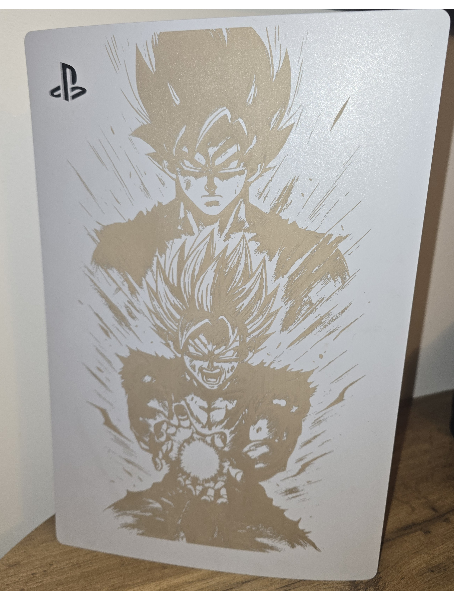

Gravure Laser sur Métal
Précision et durabilité sur aluminium, inox, acier et laiton à La Châtaigneraie (85).
Chez Laser & Matières à La Châtaigneraie, nous réalisons des gravures laser sur métal alliant finesse et durabilité. Notre technologie laser permet de marquer avec précision de nombreux métaux : aluminium, inox, acier, laiton et plus encore.
Idéal pour le marquage industriel (numéros de série, logos, plaques signalétiques) mais aussi pour des créations artistiques et décoratives (bijoux, objets design, trophées). Le résultat est permanent, résistant à la chaleur, aux frottements et au temps.

Exemple de marquage de précision sur pièce métallique